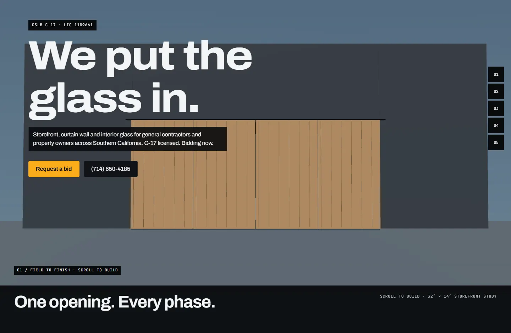

Storefront
Aluminum framing, glass and entrances. Measured to the opening.
- Field measure
- framing
- glazing


Storefront, curtain wall and interior glass for general contractors and property owners across Southern California. C-17 licensed. Bidding now.
R.O. 32′-0″ W × 14′-0″ H · FIELD MEASURED · PLUMB / LEVEL / SQUARE
2″ × 4-1/2″ ALUMINUM STOREFRONT · CENTER-SET · ANCHORED + SHIMMED
1″ INSULATED LOW-E · TEMPERED WHERE REQUIRED (CBC 2406)
PERIMETER SEALANT + BACKER ROD · DOORS HUNG · HARDWARE SET
PUNCH CLEARED · TURNED OVER
CSLB C-17 · LIC #1109661 · ACTIVE · $25K CONTRACTOR’S BOND · WORKERS’ COMP ON FILE
Recent work: Ono Hawaiian BBQ, Temecula · Haven House shelter · Meritage Homes office TI (with Pacific Tusk Builders) · Esplanade Builders
Actual company photos. Move the divider to compare the opening before and after glazing.

 BEFOREAFTER
BEFOREAFTER
 BEFOREAFTER
BEFOREAFTERAluminum framing, glass and entrances. Measured to the opening.
Exterior glazing scope coordinated with the structure and building envelope.

Glass partitions and office fronts for tenant improvements.

Commercial glass entrances with the hardware the opening needs.

Broken glass, board-up and door closer work. Call to discuss availability.

Storefronts, office fronts and the work in between. Photos and field clips from CGC.
3.27 lb/ft² per 1/4″ of glass.
Approximate. Verify with your supplier.
Plans, scope, city and a due date. Start there.
Yes. CGC handles commercial glazing scopes for general contractors, project managers and property owners.
CGC is based in Wildomar, California and works across Southern California.
Send plans, the project city, glazing scope and bid due date. Include specifications, schedules and any known site constraints.
Commercial service work includes broken glass, board-up and door closers. Call (714) 650-4185 to discuss the opening and current availability.
Commercial Glazing Contractors Inc. holds California C-17 glazing license #1109661. The license page has the verification link, bond and workers’ compensation details. View license details.
Lead times depend on the scope, glass makeup, approvals, fabrication and site readiness. Send the project information so the schedule can be reviewed.
No. A bid request is not a contract. Scope, price and schedule are addressed in a written agreement.